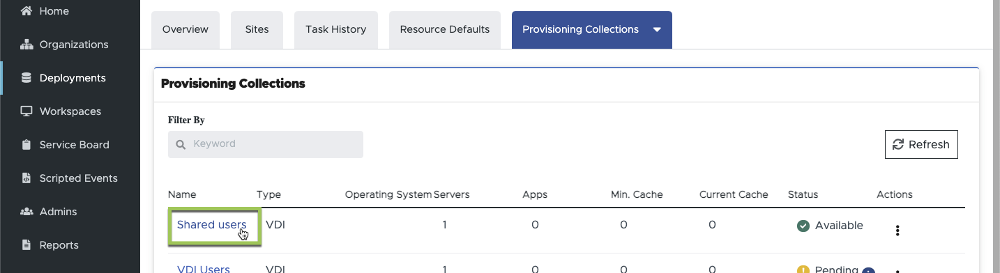
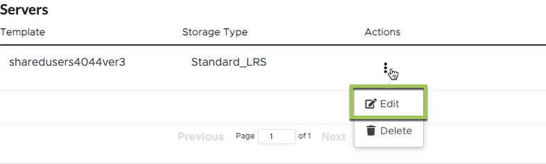

Update and Deploy VM Images
Contributors
 Download PDF of this page
Download PDF of this page
Application Delivery Methodology
Users can access any applications that are installed the session host virtual machine (SHVM) where their user session is running.
Users are assigned to a pool of SHVMs ("host pool") based on their membership in a user group. Every SHVM in that host pool is based on the same VM Image, has the same applications and runs on the same VM resources. Each time a user connects, they are assigned to SHVM in their host pool with the fewest current user sessions.
By adding or removing applications from each SHVM in the host pool the VDMS administrator can control which applications VDMS users can access.
Adding (or removing) applications from each SHVM can be performed directly on each SHVM or to a single VM Image which in turn can be deployed to all SHVMs in the host pool.
This article covers VM Image management. Directly installing applications on the SHVMs is covered in this article.
Updating the VM Image
The recommended method for adding (or removing) applications to SHVM(s) is by editing the VM Image assigned to the host pool. Once the VM Image is customized and validated, the VDMS support team can deploy it to all SHVMs in the host pool upon request.
-
Navigate "Provisioning Collections" within the deployment in the VDS portal
-
Click on the provisioning collection associated with the host pool you wish to update.

-
Make note of the "VM Template" name in the "Servers section.


-
-
Edit the Server template ensuring that the source template is the VM Template noted in step 2.a. above. Click "Continue"

|
Don’t edit these settings: 1. Type = VDI 2. Share Drive = empty 3. Minimum Cache = 0 4. Data Drive = Unchecked 5. Storage Type = Standard_LRS |
-
The VDMS automation will now build a temporary VM in Azure, the machine name will be CWT#. Building this VM may take 25 minutes. Once the process completes the status will change to "Pending"
-
Note, this VM will run until the customization process is complete so it is important to build, customize and validate the VM within a day or two.
-
-
Once the temporary VM is ready, you can log on to the VM by editing the Provisioning Collection and then clicking "Connect" on the server.
-
When prompted for credentials, domain admin credentials can be generated by any VDMS admin with "PAM Approver" rights.
-
-
Once the VM image is validated, contact the VDMS support team to schedule an image refresh.
-
The team will build new session hosts based on the new image.
-
If required, please coordinate time to test the new hosts before we redirect new users to the new hosts.
-
-
Once ready, the support team will redirect all new user sessions to the new hosts. We’ll shut down the old hosts once no users are connected. These old VMs will remain in a deallocated state for warm failover but these VMs will be automatically purged after 7 days.
Changing the SHVM(s) directly
Changes can be made directly on the SHVM(s) manually or via any available automation tools. More information on this is found in this article.
When making changes directly to the SHVMs in a host pool it is critical that each SHVM remain configured in the same way or users may have inconsistent experiences as they connect to different SHVMs.
| By default, individual SHVMs are not backed up because they typically don’t have unique data and are based on a standardized VM image. If you’re making customizations directly to the SHVMs, please contact support to get a backup policy applied to one of the SHVMs in the host pool. |
Sysprep Troubleshooting
The VDMS image "Validate" function uses Microsoft’s Sysprep utility. When validation fails, the most common culprit is a Sysprep failure. To troubleshoot failures, start in the Sysprep log file located on the CWT# VM in the path: C:\windows\system32\Sysprep\panther\setupact.log
 Edit on GitHub
Edit on GitHub